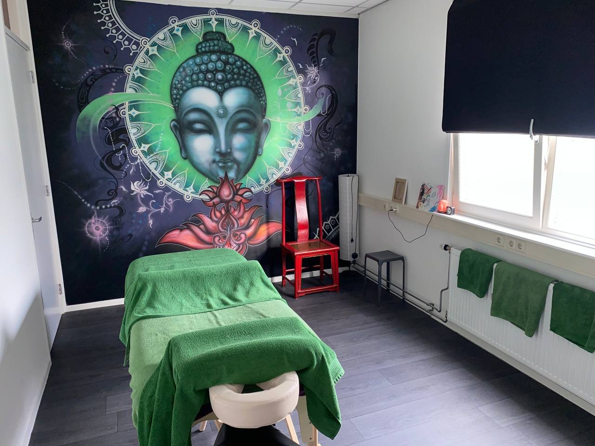
Esoterisch Gezondheidscentrum San Zhong Yi
Traditionele Chinese Geneeswijzen in Ravenstein — Acupunctuur, Shiatsu, Tui Na Massage, Spirituele Coaching & Healing door Lisa Seerden-Piëst

Traditionele Chinese Geneeswijzen in Ravenstein — Acupunctuur, Shiatsu, Tui Na Massage, Spirituele Coaching & Healing door Lisa Seerden-Piëst
'San Zhong Yi' kan vanuit het Chinees worden vertaald naar 'drie in één', wat voor een drietal bijzondere betekenissen staat.
De Triquetra — het logo — is een middeleeuws Keltisch symbool dat verwijst naar het Leven, de Dood en een Wedergeboorte, en naar de drie elementen Aarde, Water en Lucht. De cirkel verwijst naar de zon en het element Vuur.
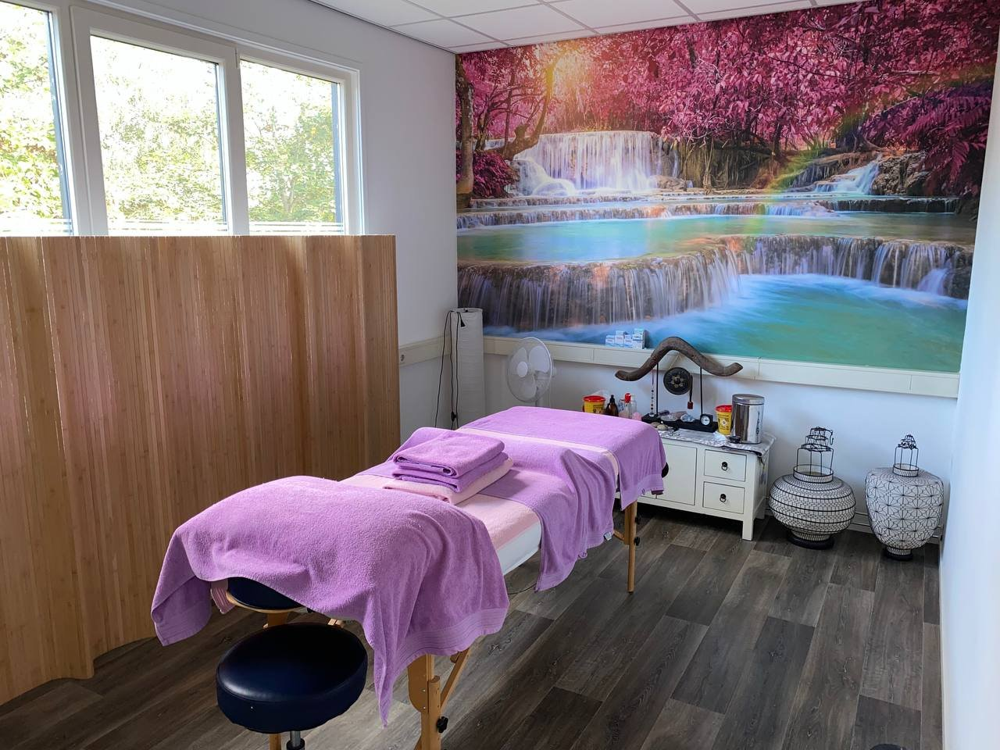
Traditionele Chinese Geneeswijzen gecombineerd met spirituele healing — voor lichaam, geest en ziel.
Balanceren van de Qi-stroom in de meridianen door gestructureerd zetten van naalden. Effectief bij pijn, functionele klachten en emotionele onbalans.
Meer infoTwee krachtige massagetechnieken gecombineerd tot een unieke behandeling. Klachtgericht of voor het gehele lichaam, voor verlichting van pijn en emotionele balans.
Meer infoCupping heft blokkades op en stimuleert doorbloeding. Moxa verwarmt de meridianen met bijvoet en heeft een helend effect bij littekens, blessures en gewrichtspijnen.
Meer infoKaartlegging en een oplegging van een Crystal Grid met begeleide meditatie. Voor spirituele inzichten, relationele harmonisatie en innerlijk helingswerk.
Meer infoEen schraaptechniek met speciale kruidenolie en een gepolijste steen van Jade of Rozenkwarts om de doorstroming van Qi en bloed te stimuleren.
Meer infoKaartlegging, mediumschap en inzichtelijke reading. Voor levensvragen, spirituele inzichten, relationele harmonisatie en begeleiding bij het helingsproces.
Meer infoDrie unieke ruimtes — elk met een eigen thema, kleurenpalet, frequentie en energetische werking.
Groen, zwart, rood, paars — Kalmerend, veilig en vertrouwd
Roze, turquoise, lila — Geborgenheid en eigenliefde
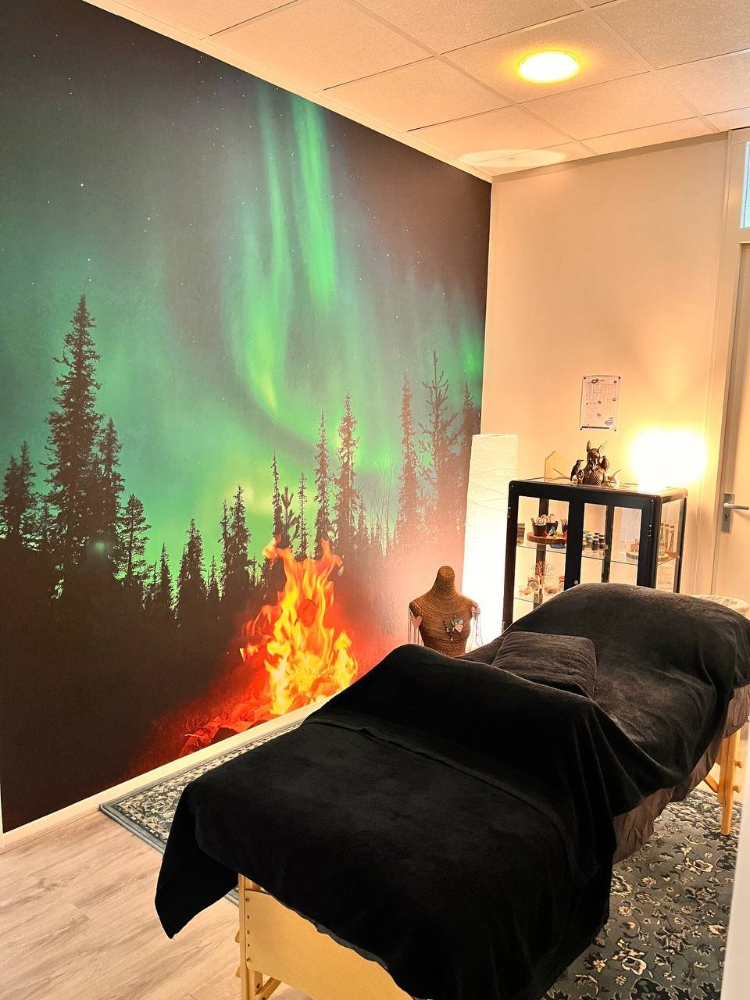
Blauw, petrol, okergeel — Ontspannend en mysterieus
Ervaringen van patiënten en cliënten
"Lisa is onwijs bijzonder! Ik ben voor verschillende klachten bij haar geweest en vaak na 1 behandeling al verbetering of genezing. Lisa kan je op goede wijze adviseren en behandelen."
— Romy van Dijk
"Ondertussen kom ik alweer een aantal jaar bij Lisa. Lisa kon mijn klachten wel verklaren en behandelen. Nu kan ik mijn lichaam weer gebruiken zoals ieder ander. Enorm professioneel en een fantastisch mens."
— Stacey van Megen
"Prachtig gezondheidscentrum pal tegenover het station. Word gerunt door een sterke en bekwame vrouw die heel veel kennis bezit. Als de westerse medici het niet meer weet dan kan zij er wel iets mee!"
— Thomas Seerden
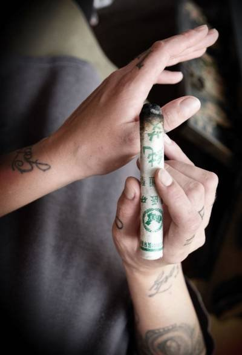
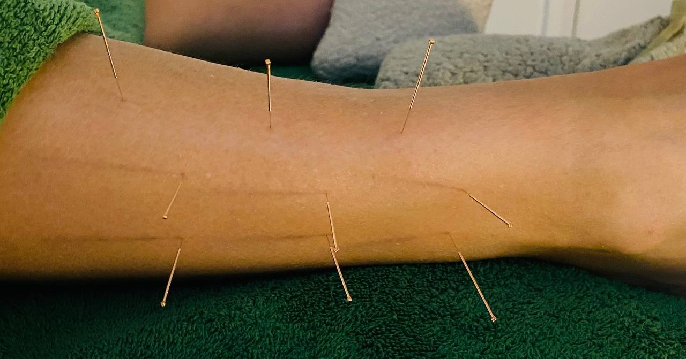
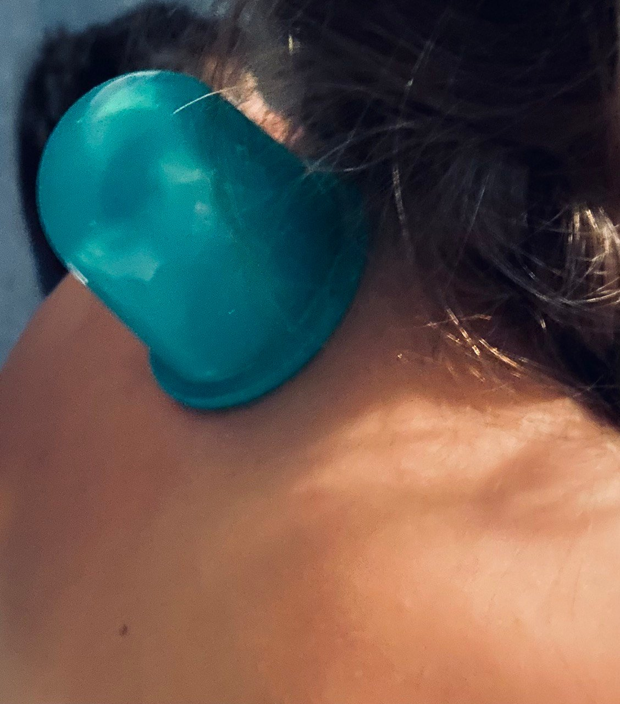
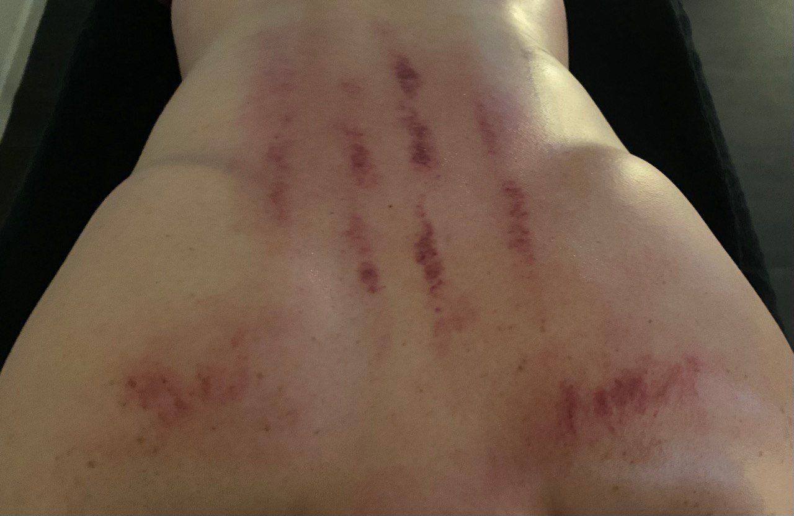
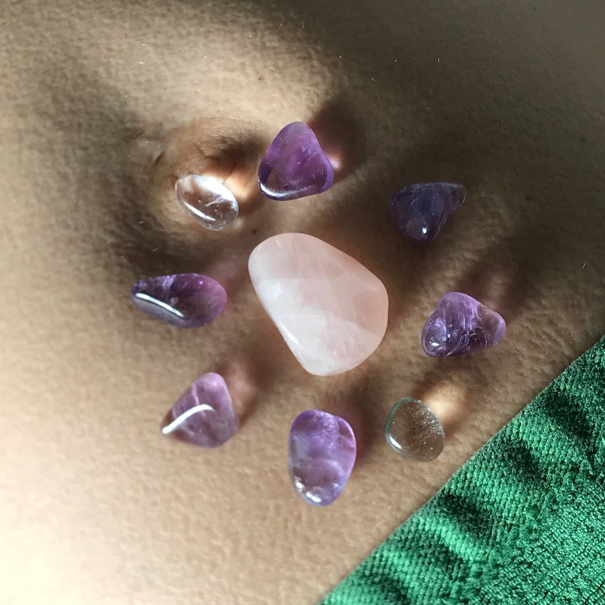
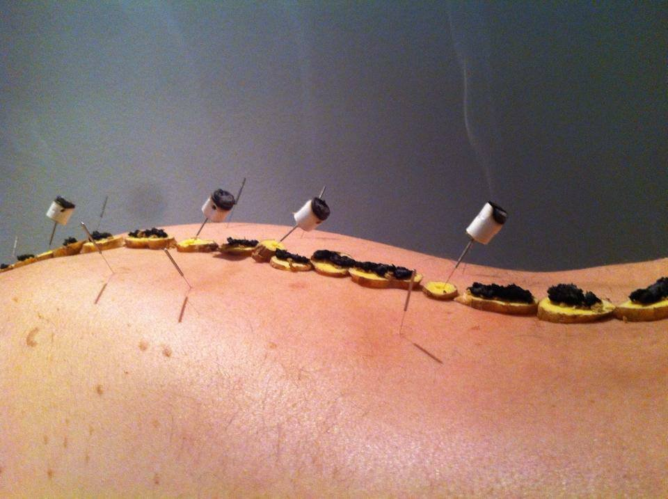
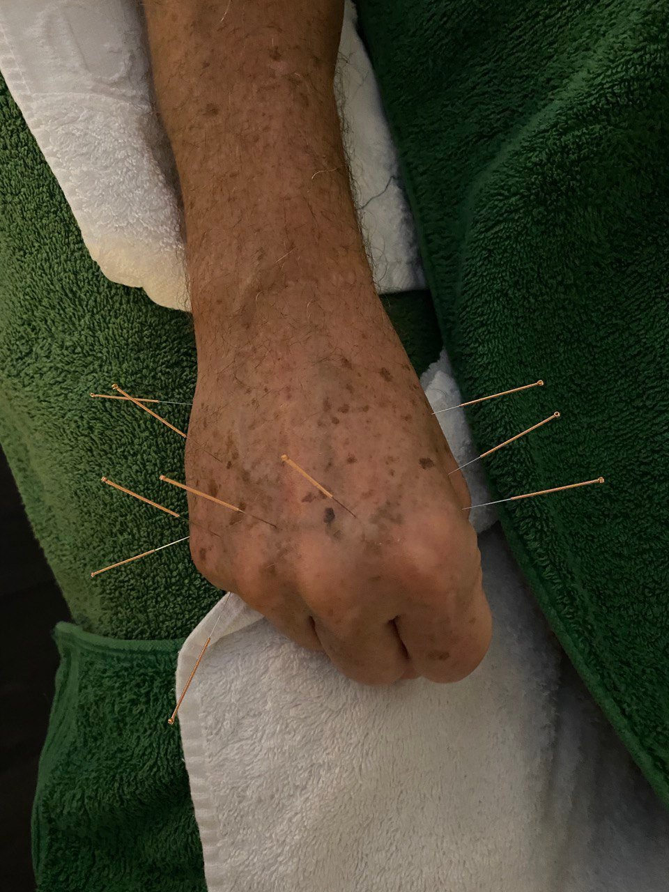
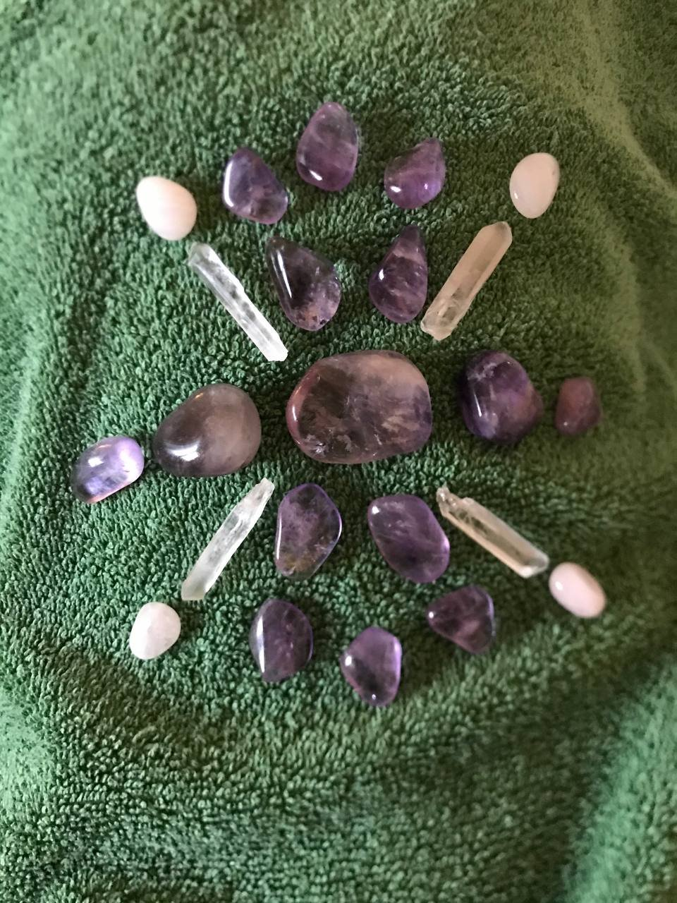
Neem contact op via het contactformulier of SMS. Geen verwijzing nodig voor een afspraak of vergoeding bij uw zorgverzekeraar.